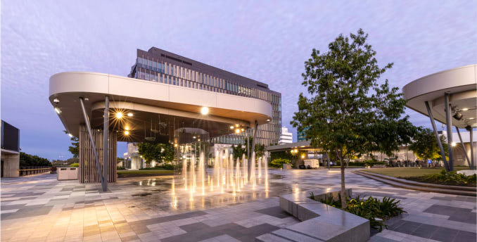

Cornerstone Interactive Mapping
Request a Quote
Support
My Account
Cornerstone Interactive Mapping
Choose your council
Brisbane City Council
Moreton Bay Regional Council
Logan City Council
Sunshine Coast Council
City of Gold Coast
Scenic Rim Regional Council
Redland City Council

Ipswich City Council
Noosa Shire Council
Toowoomba Regional council
Gympie Regional council
Fraser Coast Regional council
3D Property Planning